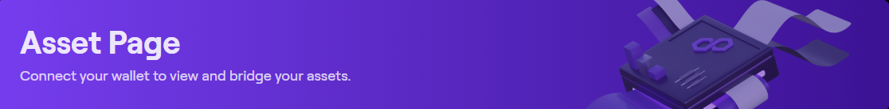

①
1) Connect & Specify Route (Polygon Bridge)
Connect wallet, pick origin/destination networks on Polygon Chain, choose token and amount. The router estimates gas, fees, and min received.
Move assets securely between networks using Polygon Bridge. This guide covers routing, fees & slippage, MEV protection, exit times, and a safe workflow in Polygon Portal.
Connect wallet, pick origin/destination networks on Polygon Chain, choose token and amount. The router estimates gas, fees, and min received.
Approve token once (per chain), then submit the bridge transaction. Use a sane gas strategy to avoid reorgs/MEV.
Depending on the route (PoS vs zk), finalize after checkpoint/proof. Funds materialize on the destination network.
Verify receipt, optionally unwrap canonical assets or swap for target tokens with price-impact safeguards.
Polygon Bridge provides canonical and fast-bridge routes across the Polygon Chain ecosystem. For most users, Polygon Portal offers the cleanest UX with guardrails: quoted vs realized price, slippage bounds, and failure-recovery hints.
Two dominant flows exist: PoS bridge (checkpoint-based finality; typical exit windows) and zk-secured routes (validity proofs; faster finality). Your choice impacts withdrawal time, fees, and risk. When in doubt, prefer canonical Polygon Bridge paths from Polygon Portal.
minReceived, and monitor confirmations before subsequent tranches.
Total cost = L1 gas + L2 gas + bridge relaying + optional swap fees. Slippage is only relevant when swapping before/after bridging. Use tight but realistic slippage (e.g., 0.3–0.8%) and prefer deep liquidity venues.
| Component | Usually | Notes |
|---|---|---|
| zk Proof/Relayer | Low–Moderate | Faster finality; cost bundled or shown explicitly in Polygon Portal. |
| PoS Checkpoint | Low | Longer exits on withdrawals; cheaper gas overall. |
| Swap Fee/Slippage | 0.05–0.5%+ | Depends on venue depth and route; protect with min-received. |
To reduce MEV and sandwich risk around pre/post swaps, avoid broadcasting during extreme volatility, use private or protected tx routes when available, and set slippage caps. Verify destination chain liquidity before committing large size.
Track these after each session to validate routing quality on Polygon Portal.
| Metric | Target | Interpretation |
|---|---|---|
| Effective Price | <= Quote × (1 + 0.30%) | Accounts for all fees/slippage; lower is better. |
| Realized vs Quoted | ∆ <= 0.30–0.80% | Deviation beyond band suggests congestion or shallow liquidity. |
| Fail/Revert Rate | < 1% | Retry with adjusted gas or alternate route if exceeded. |
| Time-to-Finality | Route-dependent | zk routes faster; PoS withdrawals longer. Plan around this. |
Prefer canonical docs and audited, battle-tested routes. Links below are placeholders; replace with official references.
Canonical Polygon Bridge routes are generally safer than third-party fast bridges. Use Polygon Portal for default routing and clear finality steps.
L1/L2 gas, any relayer/proof costs, and optional swap fees. Polygon Portal shows estimates and min-received protection.
Slippage applies when a swap occurs before/after bridging. Set a conservative tolerance and ensure deep liquidity on the destination of Polygon Chain.
zk routes finalize faster; PoS withdrawals may require longer exit windows. Plan settlement timing accordingly.
It cannot fully eliminate MEV, but you can reduce it: avoid volatile windows, use private tx where available, and set strict slippage on swaps.
Yes. Canonical PoS vs zk-secured routes differ in finality time and proof costs. Choose based on urgency and fee sensitivity.
Yes—recommended. Use multiple tranches with confirmations and minReceived guards to manage liquidity and risk on Polygon Chain.
Check nonce/mempool, bump priority fee, reduce size, or retry later. Verify no partial state before resubmitting.